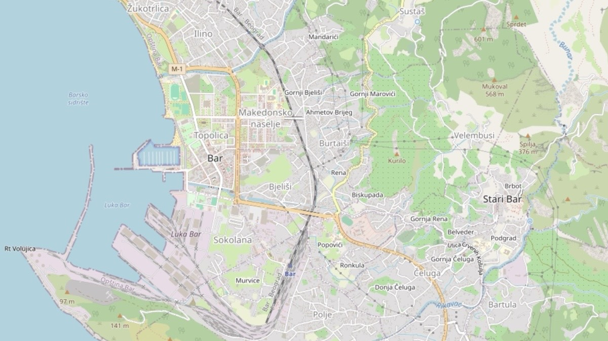
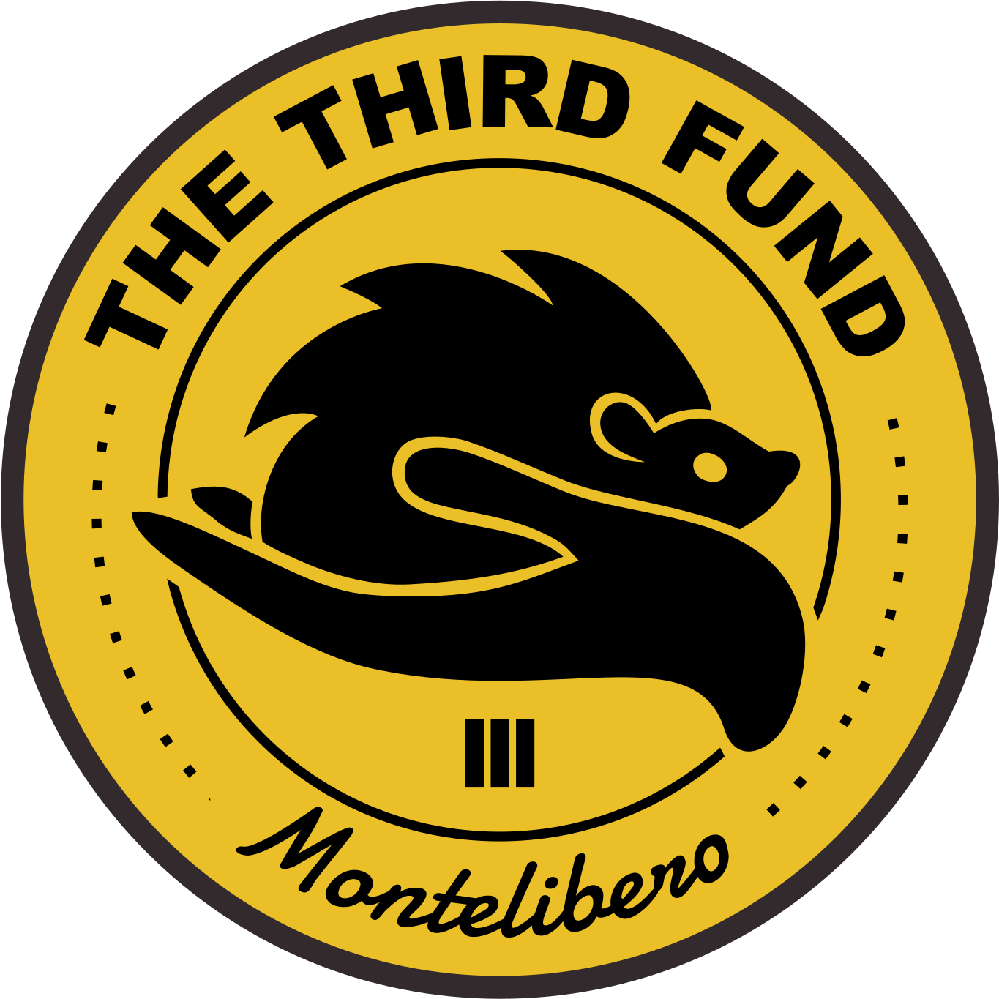
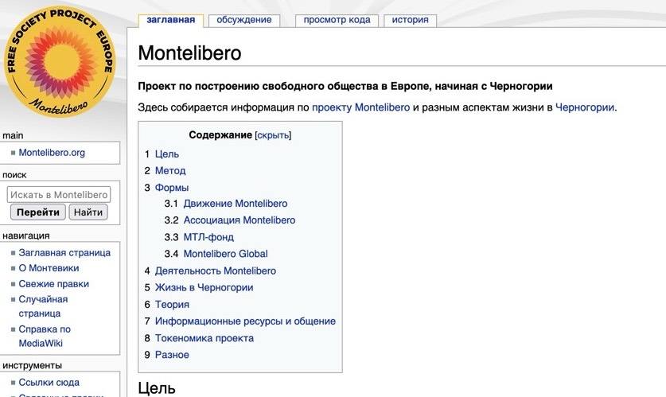

Карты и открытые данные Бара
Грант на работу с OpenStreetMap и местными открытыми данными.
Источник на русском
Третий фонд МонтелибероФонд сообщества · С 2023 года
Мы объединяем пожертвования, чтобы помогать проектам Монтелиберо: от образования и издания книг до местной инфраструктуры и мероприятий.

Доноры переводят средства на счёт фонда для пожертвований.
Совет рассматривает предложения и определяет, как их поддержать.
Автор или куратор ведёт проект. О работе фонда можно узнать из публичных решений и отчётов.
Несколько примеров из публичной истории фонда. Поддержка бывает разной: гранты, спонсорство, пожертвования и беспроцентные займы.

Грант на работу с OpenStreetMap и местными открытыми данными.
Источник на русском


Беспроцентный заём на выпуск сувенирной продукции сообщества.
Источник на русскомПоддержка организации фестиваля и спикеров.
Источник на русскомПоддержка перевода и печати книги Титуса Гебеля на черногорском.
Источник на русскомБилеты для участия в фестивалях 2023 и 2024 годов.
Источник на русскомБеспроцентный заём на печать тиража книги.
Источник на русскомПоддержка поездки представителей на конференцию.
Источник на английскомСпонсорство либертарианской конференции в Тбилиси.
Источник на русскомПожертвования на медиапроект сообщества.
Источник на русскомПожертвовать
Фонд принимает EURMTL, USDM и SATSMTL — токены в сети Stellar. Ссылки на кошельки ниже предназначены для EURMTL.
Перед отправкой проверьте сеть, получателя и эмитента токена. Переводы необратимы, возможны комиссии. Этот сайт не запрашивает секретные ключи и не подписывает платежи.
Перед переводом сверьте токен с его публичным описанием. Нужна помощь или хотите помочь другим способом? Сначала напишите Совету.
GACKTN5DAZGWXRWB2WLM6OPBDHAMT6SJNGLJZPQMEZBUR4JUGBX2UK7VEURMTL · USDM · SATSMTL (Источник на русском)
Связаться с СоветомЗапросить поддержку
Предложить идею в поддержку Монтелиберо может любой человек. Это может быть и помощь частному лицу. Участие в движении не обязательно.
Обе ссылки открывают Telegram. Бот передаёт сообщение Совету, а сообщения в чате обсуждения видны всем.
Вы или ваш куратор будете вести проект; расходы на эту работу можно включить в предложение. Решение о поддержке принимает Совет.
Некоторые решения о поддержке со ссылками на исходные публикации. Более полная история — в архиве отчётов.
Пожертвование · Источник на русском
Пожертвование · Источник на русском
Пожертвование · Источник на русском
Открыть архив отчётов (Источник на русском)
Совет формируется из крупнейших активных доноров. Для распоряжения средствами на главном счёте используется несколько подписей. Этот счёт отличается от счёта для пожертвований.
Если вы хотите обсудить пожертвование на определённую цель, свяжитесь с Советом до перевода.
Уточните у Совета другие способы помощи. Не отправляйте активы из другой сети на Stellar-адрес.
Пожертвования идут на работу фонда. Они не дают долю в собственности и не обещают доход.